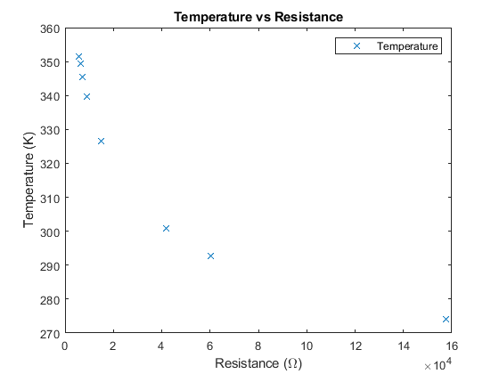
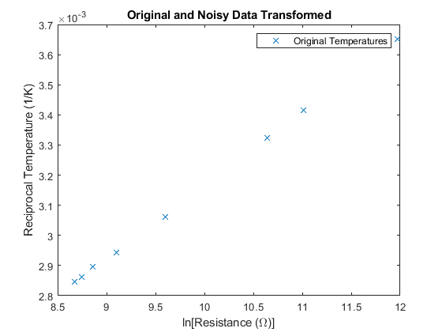
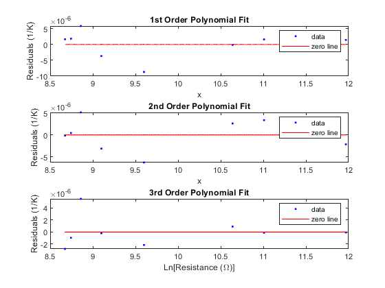
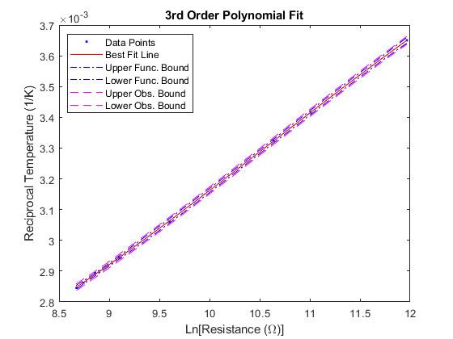
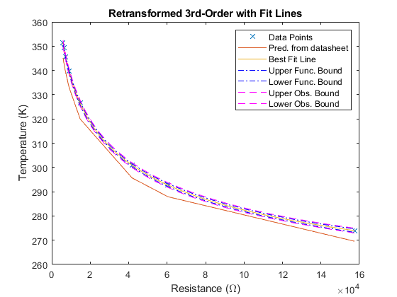

Contents
Steinhart-Hart Temperatue Fitting
% The resistances R = [5.85 6.27 7.04 8.96 14.77 41.74 60.37 157.6 ] * 1e3; % kOhm % R = [323.1500 353.1500 373.1500 358.1500]; % from datasheet % The temperatures T = [78.3 76.2 72.3 66.5 53.5 27.7 19.6 0.8] + 273.15; % K % T = [1.6432 0.5518 0.2902 0.4673] * 1e4; % from datasheet confLev = 0.95; % We set the confidence level for the data fits here. % Constants from Datasheet (calculated using datasheet_constants.m) A = -7.982; B = 4.151; C = -0.7198; D = 0.04161;
Plot Original Data
Plot the original temperature and noisy temperature data.
figure(1) plot(R,T,'x') xlabel('Resistance (\Omega)') ylabel('Temperature (K)') title('Temperature vs Resistance') legend('Temperature') hold off % Since a plot of 1/T vs ln(R) should be close to linear, we will convert % the data to the correct forms and do linear and polynomial fits with % them. ooT = 1./T; lnR = log(R);
Plot Transformed Data
Plot the transformed original temperature and noisy temperature data.
figure(2) plot (lnR,ooT,'x') xlabel('ln[Resistance (\Omega)]') ylabel('Reciprocal Temperature (1/K)') title('Original and Noisy Data Transformed') legend('Original Temperatures','Noisy Temperatures') hold off % Start by working with the original transformed data. We will fit a 1st, % 2nd, and 3rd order polynomial to the data and look at the fit and the % residuals. range = max(lnR) - min(lnR); % Get range for our xplot data xplot = min(lnR):range/30:max(lnR); % Generate x data for some of our plots. % The fitting routine 'fit' is particular about the form of the data. % Use the line below to get your data into the correct format for 'fit'. [Xout,Yout] = prepareCurveData(lnR, ooT); [f1,stat1] = fit(Xout,Yout,'poly1') % 1st-order fit with statistics. [f2,stat2] = fit(Xout,Yout,'poly2') % 2nd-order fit with statistics. [f3,stat3] = fit(Xout,Yout,'poly3') % 3rd-order fit with statistics.
Warning: Ignoring extra legend entries.
f1 =
Linear model Poly1:
f1(x) = p1*x + p2
Coefficients (with 95% confidence bounds):
p1 = 0.0002445 (0.0002409, 0.000248)
p2 = 0.0007231 (0.000688, 0.0007582)
stat1 =
struct with fields:
sse: 1.3438e-10
rsquare: 0.9998
dfe: 6
adjrsquare: 0.9998
rmse: 4.7325e-06
f2 =
Linear model Poly2:
f2(x) = p1*x^2 + p2*x + p3
Coefficients (with 95% confidence bounds):
p1 = 2.161e-06 (-1.983e-06, 6.305e-06)
p2 = 0.0002004 (0.0001158, 0.000285)
p3 = 0.0009447 (0.0005183, 0.001371)
stat2 =
struct with fields:
sse: 9.8856e-11
rsquare: 0.9998
dfe: 5
adjrsquare: 0.9998
rmse: 4.4465e-06
f3 =
Linear model Poly3:
f3(x) = p1*x^3 + p2*x^2 + p3*x + p4
Coefficients (with 95% confidence bounds):
p1 = -3.098e-06 (-7.005e-06, 8.088e-07)
p2 = 9.836e-05 (-2.3e-05, 0.0002197)
p3 = -0.0007883 (-0.002037, 0.0004604)
p4 = 0.004307 (5.285e-05, 0.008562)
stat3 =
struct with fields:
sse: 4.4693e-11
rsquare: 0.9999
dfe: 4
adjrsquare: 0.9999
rmse: 3.3426e-06
 Plot Residuals
Since the fit is so close, we need a better way to distinguish how well 1st-, 2nd-, and 3rd-order fit. We'll plot the residuals to compare.
figure(3) subplot(3,1,1) plot(f1,Xout,Yout,'residuals') % xlabel('Ln[Resistance (\Omega)]') ylabel('Residuals (1/K)') title('1st Order Polynomial Fit') % The linear residuals look parabolic, so we need at least 2nd order. subplot(3,1,2) plot(f2,Xout,Yout,'residuals') % xlabel('Ln[Resistance (\Omega)]') ylabel('Residuals (1/K)') title('2nd Order Polynomial Fit') % The 2nd-order residuals look cubic so we need at least 3rd order. subplot(3,1,3) plot(f3,Xout,Yout,'residuals') xlabel('Ln[Resistance (\Omega)]') ylabel('Residuals (1/K)') title('3rd Order Polynomial Fit') % The 3rd-order residuals look pretty random, so we're done.
Plot 3rd-order Fit and Bounds
Let's plot the 3rd order fit with the data and the functional and observational bounds. Note, since there is so little noise in the data, we won't be able to distinguish which is which.
p11 = predint(f3,xplot,confLev,'observation','off'); % Gen conf bounds p21 = predint(f3,xplot,confLev,'functional','off'); % Gen conf bounds figure(4) plot(f3,Xout,Yout) % Notice that the fit doesn't need both x and y. hold on plot(xplot, p21, '-.b') % Upper and lower functional confidence limits plot(xplot, p11, '--m') % Upper and lower observational confidence limits xlabel('Ln[Resistance (\Omega)]') ylabel('Reciprocal Temperature (1/K)') title('3rd Order Polynomial Fit') legend('Data Points','Best Fit Line','Upper Func. Bound',... 'Lower Func. Bound', 'Upper Obs. Bound', 'Lower Obs. Bound',... 'Location', 'northwest') hold off
Transform Fit Back
Let's untransform the best fit and confidence bounds back into the original space with T vs R and see how good we feel about things.
yplot = f3(xplot); figure(5) plot(R,T,'x') hold on % plot(exp(xplot), 1 ./ (A + log(exp(xplot)) * B + (log(exp(xplot)).^2) * C + (log(exp(xplot)).^3) * D)) R0 = 47000; % from datasheet T0 = 293.15; % reference temp is 25C, negligible uncertainty B = 4050; % in Kelvin, from 25 to 50 C calc_T = @(r) (B * T0) ./ (B + T0.*(log(r/R0))); plot(R, calc_T(R)); plot(exp(xplot), 1./yplot) plot(exp(xplot), 1./p21, '-.b') % Upper and lower functional confidence limits plot(exp(xplot), 1./p11, '--m') % Upper and lower observational confidence limits legend('Data Points','Pred. from datasheet','Best Fit Line','Upper Func. Bound',... 'Lower Func. Bound', 'Upper Obs. Bound', 'Lower Obs. Bound',... 'Location', 'northeast') xlabel('Resistance (\Omega)') ylabel('Temperature (K)') title('Retransformed 3rd-Order with Fit Lines') hold off